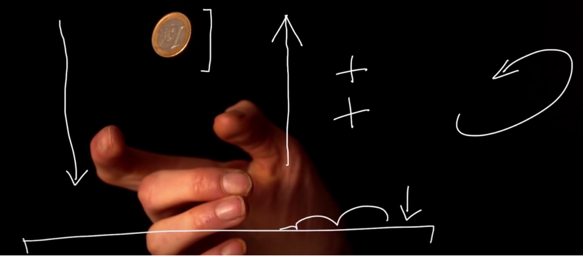
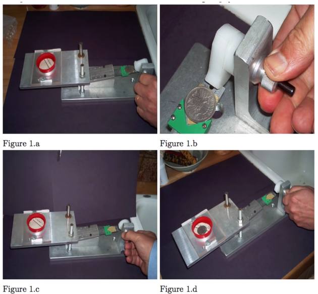

Давайте підкинемо монетку
Якщо щось не можна передбачити або неможливо підібрати шаблон за яким це щось відбувається, ми називаємо його випадковим. Так наприклад результат підкидання монетки чи кидання гральних кубиків здається нам абсолютно випадковою подією, але якщо б нам вдалось дізнатись усі початкові дані, силу з якою була підкинута монетка, кількість обертань в повітрі, силу вітру навколо, то змогли б визначити наперед результат її падіння.
Вчені навіть створили роботів, які дозволяють підкинути монетку так, щоб отримати саме бажаний результат.
Мова Python дозволяє згенерувати псевдовипадкові значення. Для цього використовують вбудовану бібліотеку random.
image
Розглянемо деякі функції,що містить дана бібліотека:
- random() дозволяє отримати випадкове число від 0 до 1.
- randint(a, b) дозволяє отримати ціле число з проміжку a b
- seed(X) - дозволяє задати число відносно якого буде будуватись випадкова величина, функцію необхідно викликати перед викликом функції що поверне випадкове значення. Якщо Х не задати, значенням буде братись час системи(комп'ютера)
Випадковості
То чи може існувати щось, що б ви не могли передбачити наперед чи обчислити, навіть маючи всі
знання всесвіту? Можливо є щось що ви вважаєте випадковим, але насправді просто не задумується
над шаблоном за яким воно працює або ж ви вже бачили справжню випаковість, тільки не
спостерігали за нею достатньо довго? Можливо вона схована за якимось камуфляжем чи прикриттям
яке випадково може створити який шаблон поведінки?
Ютуб генерує посилання на відео з випадкових літер без жодного шаблону, вдаючи мавпу що
випадково понажимала декілька клавіш на клавіатурі. Хоча інколи ми можемо побачити цілі слова в
посиланні, що наводить на думку що все ж існує якась залежність(для того щоб знайти посилання
яке містить якесь слово в пошуковому запиті необхідно написати
allinurl:[слово що хочете знайти] site:youtube.com/watch)
image
Найяскравішим випадком знаходження залежності в випадковій послідовності була бібліотека музики для IPAD. Користувачі інколи помічали схожість в списку випадкових записів з тим що вони слухали зазвичай, і звинуватили компанію Apple в невипадковій видачі музики. Велика кількість скарг змусила компанію переписати випадковий генератор так щоб він був менш випадковим.
Уявімо, що вас попросили написати власний випадковий генератор назви випадкової мелодії. Перш за все в